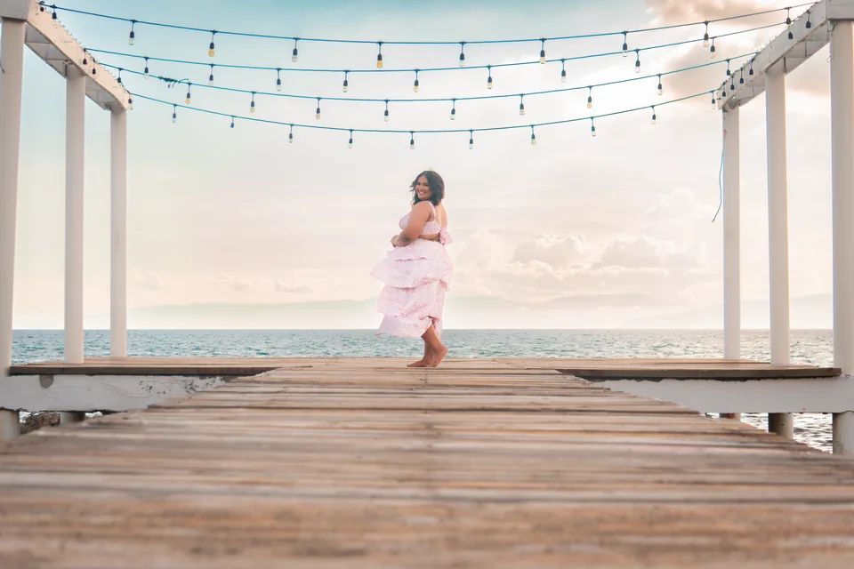

Portafolio fotográfico ERU FRIAS

Personas, lugares y pequeños gestos. Historias contadas a través de la luz.
Explorar las sesiones
Personas, lugares y pequeños gestos. Historias contadas a través de la luz.
Explorar las sesiones